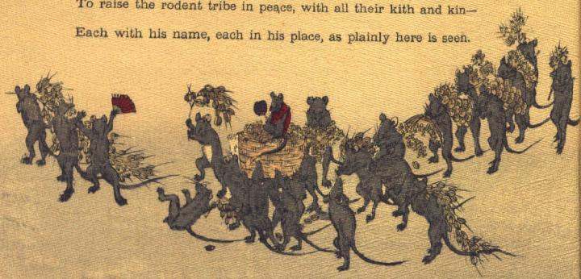

鼠の群れ。麦のような穀物を行列になって運んでいる。列の中央では、数匹の鼠が、穀物の盛られた籠を担ぎ上げている。その籠の上に赤いちゃんちゃんこを着て、団扇を持った鼠が座っている。籠の前方にいる鼠は、赤い扇子を持ち、はしゃぐように両前脚を上げている。その向って右の鼠は片脚に穀物の房を持ったまま、仰向けに転がっている。他の鼠たちは、穀物を肩に背負ったり、持ち上げたりしながら歩いている。
著作者：John Little Archibald／出典：親書誌：U426_nichibunken_0122：The rat's plaint／日付：2006／資源識別子：U426_nichibunken_0122_0002_0000
Copyright (c)2010- International Research Center for Japanese Studies, Kyoto, Japan. All rights reserved.